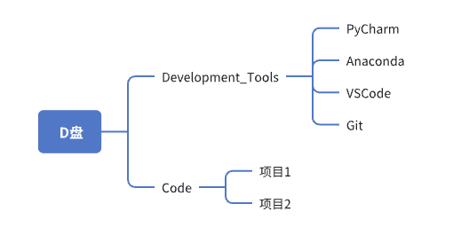
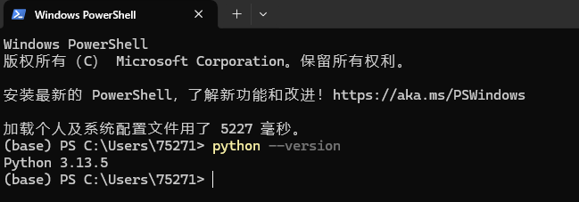
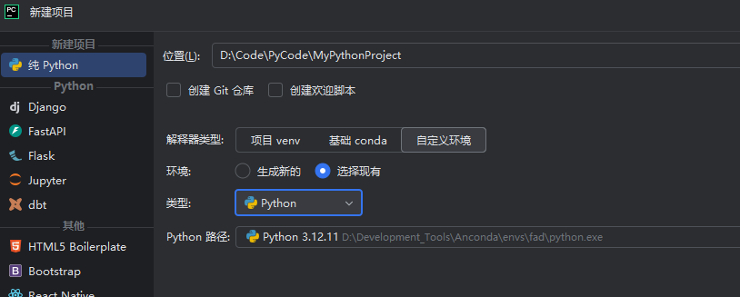
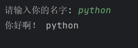
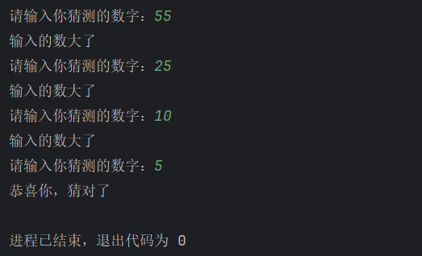

介绍
此为前后端学习的任务发布处，每周发布一次任务，如果学习过程有问题，可以群里提问，会将问题汇总及解答放在相应小节之下，方便查看。
本次学习的核心目标是能独立打通前端或后端开发的完整流程。学习将遵循“实践导向”原则：先跑通流程建立整体认知，再针对薄弱环节或兴趣方向按需深入，通过项目实战巩固和拓展技能。
注意：
作业提交链接如下(飞书)
第一周（10月9日-10月10日）为通识课
课程表：
| 周数 | 时间段 |
|---|---|
| 第一周 | 10月9日-10月10日 |
| 第二周 | 10月13-10月17日 |
| 第三周 | 10月20-10月24 |
分类培养工作交流群人员分类：
| 姓名 | 方向 |
|---|---|
| 孟晚婷 | 前端 |
| 吴邵春 | 前端 |
| 华静怡 | 前端 |
| 范哲松 | 前端 |
| 阿合勒盖·加哈甫 | 前端 |
| 刘鹏 | 前端 |
| 王彬彬 | 后端 |
| 石嘉成 | 后端 |
| 杨宏智 | 后端 |
| 高志杰 | 后端 |
| 李羽璨 | 后端 |
| 许孜怡 | 模型 |
| 马琪越 | 模型 |
| 王妍 | 模型 |
| 丁亚奇 | 模型 |
全栈技术交流学习群人员分类方向：
| 姓名 | 方向 |
|---|---|
| 许阳 | 前端 |
| 王悦 | 前端 |
| 许洋 | 前端 |
| 郭亚栋 | 后端 |
| 范泽宇 | 后端 |
| 程毅 | 后端 |
| 周雄伟 | 后端 |
| 王彬彬 | 后端 |
通识
此章节主要学习前后端开发人员都需了解的知识。
在现代软件开发中，前后端开发不再是完全独立的领域。全栈工程师需要掌握两端知识，而即使是专注于前端或后端的工程师，也必须理解另一端的基本原理和工作方式，才能高效协作。本章将学习那些横跨前后端、每位开发者都应具备的通识知识。
初次了解（第一周10月9日-10月10日）
本周学习目标：
- 掌握如何管理开发工具和项目代码的目录
- 安装一些开发软件
- 了解主流框架
1、目录管理
D盘下创建文件夹Development_Tools和文件夹Code,前者专门放用于开发的软件,后者专门放项目的代码, 具体名字可以不一样。如下即可:

其中PyCharm、Anaconda、项目1是根据安装的软件和后面项目决定的，不用手动创建。
2、安装软件
安装PyCharm、VSCode、Python(版本3.12左右即可,如果会Anacondla就不用下python了)
3、了解主流框架
了解主流的后端框架:SpringBoot、Django。从下面表格给出的内容情况了解即可
| 前后端框架 | 就业、薪资情况 | 使用该技术的网页或公司 | 学习难度 | 需要的前置技术和知识 |
|---|---|---|---|---|
| SpringBoot | ||||
| Django | ||||
| Vue | ||||
| React | ||||
| 如有兴趣了解其他的 |
前端
1、前端定义
前端，也称为客户端或用户端，指的是用户在浏览器（或App）中看到并与之交互的一切内容。它包含了网页的视觉外观（布局、色彩、字体）和交互行为（点击按钮、播放视频、页面切换）。
前端工程师，就是负责构建这部分内容，让网站变得美观、流畅、易用的开发者
好的，这是一份关于“前端”的全面介绍。我们将用通俗易懂的方式，带你理解前端是什么、做什么以及它的技术世界。
一、前端是什么？一个生动的比喻
想象一下你去一家餐厅吃饭：
- 用餐区装修、菜单设计、服务员的仪容仪表 -> 这就是 前端。
- 你作为顾客，能直接看到、接触到、并与之交互的部分。它决定了你的直观感受和体验：餐厅是否干净？菜单是否清晰？服务员是否友善？
- 后厨的灶具、食材管理、厨师的烹饪过程 -> 这就是 后端。
- 你看不到，但它负责处理真正的“业务逻辑”：烹饪菜肴、管理库存、计算账单。
对应到网站或App上：
前端，也称为客户端或用户端，指的是用户在浏览器（或App）中看到并与之交互的一切内容。它包含了网页的视觉外观（布局、色彩、字体）和交互行为（点击按钮、播放视频、页面切换）。
前端工程师，就是负责构建这部分内容，让网站变得美观、流畅、易用的开发者。
二、前端工程师具体做什么？
他们的核心工作是：将设计师的设计稿（通常是PSD、Sketch或Figma文件）转换成可以在浏览器中运行的、活的代码。具体包括：
- 实现视觉界面：精确还原设计稿的布局、颜色、字体、图片等，确保在不同尺寸的设备（手机、平板、电脑）上都能完美显示（这称为响应式设计）。
- 实现交互逻辑：为网页添加“生命”。例如：
- 点击按钮后弹出登录框。
- 鼠标划过图片时产生放大效果。
- 在购物车中添加商品时，总价实时更新。
- 无刷新地加载更多内容（如无限滚动）。
- 优化性能与体验：确保网页加载速度快、动画流畅、操作响应及时，提升用户体验。
- 与后端工程师协作：从后端接口获取数据（如用户信息、商品列表），并将其动态展示在页面上。
三、核心技术“三驾马车”
任何网站的前端，都建立在三种基础技术之上，这是前端世界的基石：
| 技术 | 角色与作用 | 简单例子 |
|---|---|---|
| HTML | 结构（骨架） | 定义网页内容，如标题、段落、图片、链接、表单。它说：“这里有一个标题，这里有一张图片。” |
| CSS | 样式（皮肤与衣服） | 控制网页的呈现效果，如颜色、字体、布局、动画。它说：“标题是红色的，图片要居中显示，背景是蓝色的。” |
| JavaScript | 行为（肌肉与大脑） | 实现网页的交互和动态功能。它说：“当用户点击这个按钮时，就弹出提示框。” |
四、现代前端技术生态
随着网站变得越来越复杂（如Gmail、网易云音乐等Web应用），仅靠“三驾马车”开发效率很低。因此，诞生了强大的工具和框架。
1. 前端框架
这是现代前端开发的核心。它们提供了更高效、更规范的开发方式。
- 为什么需要？ 当应用非常复杂时，用原生JavaScript直接操作DOM会变得难以维护。框架通过组件化（将页面拆分成独立、可复用的部件）和数据驱动的理念，极大地提升了开发效率和代码可维护性。
- 主流框架：
- React：由Facebook开发，目前生态最庞大、市场占有率最高的框架。特点是灵活、高性能。
- Vue：由华人开发者尤雨溪创建，以简单易学、文档清晰著称，学习曲线平缓，非常受初学者和中小型项目欢迎。
- Angular：由Google开发，是一个“大而全”的框架，功能非常完整，更适合大型企业级应用。
2. 工程化工具
为了管理复杂的项目，前端开发也像建筑工程一样，需要一套“工具链”。
- 代码管理：Git，用于版本控制，记录代码的每一次改动，方便团队协作。
- 包管理：npm / yarn，用于安装和管理成千上万的第三方代码库（如React、Vue本身就是一个“包”）。
- 构建工具：Vite / Webpack，用于将你写的现代代码进行压缩、打包、转换，使其能在各种浏览器中高效运行。它们能极大提升开发效率。
3. 未来趋势
- TypeScript：JavaScript的超集，为其增加了类型系统，能让代码更健壮，更适合开发大型复杂应用，是目前的主流趋势。
- 跨端开发：用前端技术来开发手机App和桌面应用。如React Native、Flutter、Electron等。
五、一个完整的前端工作流程示例：加载商品列表
- 用户：在电商网站点击“手机”分类。
- 前端：
- （浏览器中）JavaScript监听到点击事件。
- 通过
fetch或axios向后端发送请求：“请给我所有手机商品的数据”。
- 后端：
- 接收到请求，从数据库中查询出所有手机商品的信息。
- 将数据整理成JSON格式，返回给前端。
- 前端：
- 收到后端返回的JSON数据。
- JavaScript 动态创建HTML元素，将每个商品的数据（图片、名称、价格）填充进去。
- CSS 确保这些商品卡片以美观的网格布局排列。
- 将最终生成的页面呈现给用户。
在整个过程中，用户感知到的只有点击分类后，页面就优雅地显示出了商品列表。这一切流畅体验的背后，都是前端工程师的功劳。
HTML+CSS+JS基础
简单总结：
- HTML 是基础，是内容和骨架。
- CSS 是美化，是外观和样式。
- JavaScript 是动能，是交互和行为。
学习视频推荐：
尚硅谷前端入门html+css零基础教程，零基础前端开发html5+css3视频
2025版pink老师最新AI+前端入门教程，零基础必看的html5、css3、grid、flex布局、响应式、移动端，bootstrap5框架，AI工具
HTML学习(第二周)
学习任务
- 了解CS架构与BS架构,浏览器相关知识
- 安装VSCode作为代码工具
- 学习HTML的核心标签：文本与标题标签、结构化标签、列表、媒体标签、超链接与表格、表单(form, input、textarea, select, label)
- 练习：制作一个简单的登录框（用户名、密码、登录按钮）、完善登录框，增加“记住我”复选框，制作一个用户注册表单。
HTML(第三周)
学习任务
- 练习： https://it.chd.edu.cn/ 。仅使用HTML的内容，将该网页的骨架和内容填充，搭建出基本的框架即可，不用太美观。
后端
一、后端的核心定义
后端是指运行在服务器上的，用户无法直接看到的部分。它负责处理业务逻辑、管理数据、为用户（前端）提供服务和数据支持。
简单来说，它的工作流程是这样的：
- 接收请求：前端（浏览器、App）发起一个请求（比如“登录”、“加载新闻列表”）。
- 处理业务逻辑：后端根据请求执行相应的操作（比如验证密码、从数据库查询新闻）。
- 与数据库交互：从数据库读取数据，或将新数据写入数据库。
- 返回响应：将处理结果（通常是JSON或HTML格式的数据）返回给前端。
二、后端开发具体做什么？（核心技术组件）
1. 后端编程语言
这是后端的“工作语言”，开发者用它来编写业务逻辑。常见的有：
- JavaScript (Node.js)：允许用JavaScript写后端，前后端语言统一，学习曲线平滑。
- Python：语法简洁，开发效率高，拥有Django、Flask等强大框架。
- Java：稳定、健壮，性能强大，是大型企业级应用的首选。
- Go (Golang)：由Google开发，以高性能和高并发能力著称，语法简单。
- PHP：为Web而生，非常流行，尤其擅长构建WordPress等网站。
- C#：通常与.NET框架搭配，在Windows生态中非常强大。
本课程建议：使用Python入手，不仅入门容易、也更容易结合大模型开发(如YOLO)。
2. Web 框架
框架是基于某种语言的“工具箱”，它提供了一套基础结构和通用功能，让开发者能更快速、更规范地构建应用，而不用一切从零开始。
- Python 框架：Django（大而全）， Flask（轻量灵活）
3. 数据库
数据库是应用的“记忆库”，所有需要持久化存储的数据（用户信息、商品数据、文章内容）都存放在这里。后端负责与数据库“对话”。
- 关系型数据库
- 特点：数据以表格形式存储，结构严谨，使用SQL语言操作。
- 代表：MySQL（最流行）, SQLite（小巧轻便，小型应用使用）
4. API
API是后端与前端的“约定”和“桥梁”。后端将功能封装成一个个API接口，前端按照预定好的规则（用什么网址、传什么参数）来调用这些接口，获取数据或执行操作。
- RESTful API：是目前最流行、最规范的API设计风格。
5. 服务器
服务器是一台24小时不关机的、高性能的计算机。后端代码就部署运行在这台服务器上，随时准备响应来自全球的请求。
- 常见的服务器软件有：Nginx, Apache。
6. 缓存
为了提升网站速度，将一些频繁读取但又不易变化的数据（如网站首页）临时存放在读取速度极快的内存中。
- 代表：Redis, Memcached。
三、一个生动的例子：用户登录
让我们通过“用户登录”这个场景，串联起上述所有组件：
- 前端：用户在登录页输入用户名和密码，点击“登录”按钮。
- HTTP请求：前端将用户名和密码通过一个 API（例如
POST /api/login）发送给后端。 - 后端（框架+语言）：运行在服务器上的、用 Python（Django框架） 编写的后端程序接收到了这个请求。
- 业务逻辑处理：后端程序开始工作：
- 验证数据：检查数据格式是否正确。
- 查询数据库：根据用户名，在 MySQL数据库 的用户表中查找对应的用户记录和加密后的密码。
- 密码校验：将用户输入的密码加密，与数据库中的密文密码进行比对。
- 生成凭证：如果密码正确，生成一个“令牌”，表示用户已登录。
- 缓存：后端可能会将这个“令牌”存入 Redis，以便后续快速验证用户身份。
- HTTP响应：后端处理完毕，通过 API 返回一个响应给前端。响应内容可能是：
{ "success": true, "token": "xyz123", "username": "小明" }（登录成功）{ "success": false, "message": "用户名或密码错误" }（登录失败）
- 前端：前端收到响应，如果是成功，就将token保存起来，并跳转到网站首页。
在整个过程中，用户完全感知不到后端复杂的处理流程，他只知道“我登录成功了”。
python基础
在学习Django之前，你必须先掌握Python的基础语法。Django框架本身就是用Python写的，你的所有业务逻辑也是用Python来编写。
推荐学习网站(b站)：
尚硅谷Python视频教程，0基础入门学习python，轻松掌握python
黑马程序员python教程，8天python从入门到精通，学python看这套就够了
初始python(第二周)
学习任务
- 了解python编程语言，并安装python环境。
- 了解python解释器、python开发环境，并安装Pycharm作为开发工具(推荐)，用pycharm创建一个python项目。
- 书写第一个python程序，要求：程序可以读取用户输入，然后输出你好！*****。 *为用户输入类容。
- 学习python的基础语言：变量、数据类型（整数、浮点数、字符串、布尔值）、运算符、注释。
- 学习python的流程控制：条件语句、循环语句
- 练习：写一个猜数字游戏。程序在运行时会随机生成一个1-100以内数字，让用户一直输入数字，同时提示用户输入的与答案比是大还是小，用户输入正确后退出游戏。（注意：随机数了解random，如果使用input接受用户输入，记得将值转换为整数类型）
参考：
1、

2、

3、

6、

初始python(第三周)
学习任务
- 练习1：使用双层循环打印九九乘法表。
- 掌握列表、元组、字典、集合，内置函数range的常用操作。
- 练习2：计算天数。
- 练习3：用户登录系统，运行时系统提示输入用户名和密码，系统返回是否登录成功，用列表或字典来保存已有用户的用户名和密码。
参考：
将鼠标停留在代码上方后，右上侧会出现按钮，点击第二个运行按钮可以查看相关演示结果
1、练习1：
fn main() { println!(" ╔══════════════════════════════════════════════╗"); println!(" ║ 九九乘法表 (1-9) ║"); println!(" ╚══════════════════════════════════════════════╝\n"); for i in 1..=9 { print!(" "); for j in 1..=i { let result = i * j; print!("{j}×{i}={result:2}", j = j, i = i, result = result); } println!(); // 换行 } println!("\n ✅ 九九乘法表打印完成！"); }
2、练习2
fn is_leap_year(year: i32) -> bool { (year % 4 == 0 && year % 100 != 0) || (year % 400 == 0) } fn days_in_month(month: u32, year: i32) -> u32 { match month { 1 | 3 | 5 | 7 | 8 | 10 | 12 => 31, 4 | 6 | 9 | 11 => 30, 2 => if is_leap_year(year) { 29 } else { 28 }, _ => 0, // 无效月份 } } fn day_of_year(month: u32, day: u32, year: i32) -> Option<u32> { if month < 1 || month > 12 { return None; } let max_day = days_in_month(month, year); if day < 1 || day > max_day { return None; } let mut total_days = day; for m in 1..month { total_days += days_in_month(m, year); } Some(total_days) } fn main() { println!("📅 计算某月某日是这一年的第几天"); let year = 2025; let month =10; let day = 19; match day_of_year(month, day, year) { Some(day_num) => { println!("✅ {}年{}月{}日 是这一年的第 {} 天。", year, month, day, day_num); } None => { println!("❌ 输入的日期不合法！"); } } let year = 2025; let month =19; let day = 19; match day_of_year(month, day, year) { Some(day_num) => { println!("✅ {}年{}月{}日 是这一年的第 {} 天。", year, month, day, day_num); } None => { println!("❌ 输入的日期不合法！"); } } }
3、
use std::collections::HashMap; use std::io; fn main() { // ====================== // 方式一：使用字典（HashMap）存储用户 - 推荐 ✅ // ====================== let mut user_db: HashMap<String, String> = HashMap::new(); // 系统当前存在三个用户 user_db.insert("admin".to_string(), "123456".to_string()); user_db.insert("lenovo".to_string(), "password".to_string()); user_db.insert("xsaxl".to_string(), "qwerty".to_string()); println!("🔐 欢迎使用用户登录系统"); println!("admin, lenovo, xsaxl"); // 获取用户输入 , 具体实现时让用户输入，此处写死方便演示 println!("请输入用户名: xsaxl"); let username = "admin"; println!("请输入密码: 123456"); let password = "123456"; // 去除换行符 let username = username.trim(); let password = password.trim(); // ✅ 使用 HashMap 查找（高效） // 登录验证 if let Some(stored_password) = user_db.get(username) { if stored_password == password { println!("✅ 登录成功！欢迎回来，{}！", username); return; } } // 如果没匹配上 println!("❌ 登录失败！用户名或密码错误。"); }